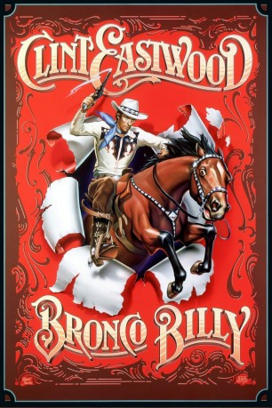
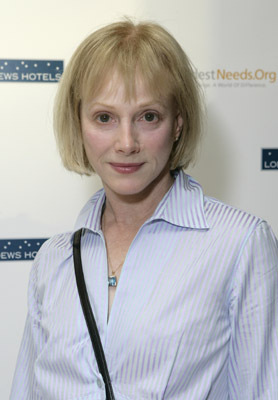
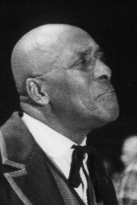
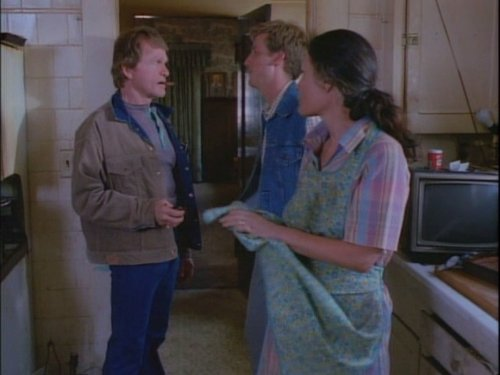
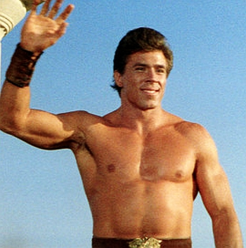
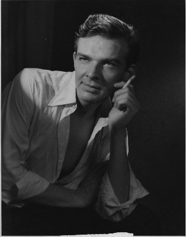
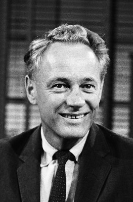
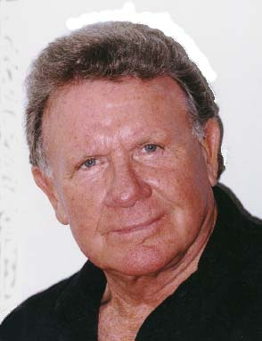
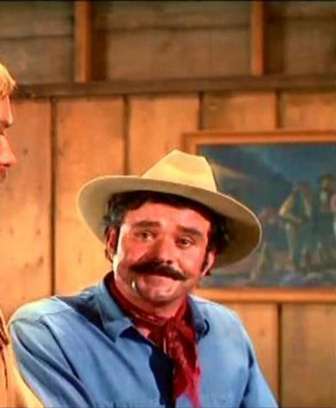

#11876 Bronco Billy
 
 IMDB-Wertung: 6.1 / 10
IMDB-Wertung: 6.1 / 10  Tomatometer: 75
Tomatometer: 75  Metascore: 66
Metascore: 66 
"Bronco" Billy McCoy (Clint Eastwood) is the proud owner of a small travelling Wild West show. But the business isn't doing too well. For the past six months, he hasn't paid his employees. At a gas station he picks up Antoinette Lily (Sondra Locke), a stuck-up blonde from a rich family, who was left behind without a penny by her husband John Arlington (Geoffrey Lewis) on their wedding night. Billy likes her looks and hires her as his assistant. She seems to bring them bad luck and the business gets even worse. In these hard times, she loses her reluctance and starts to like her new way of life, and Bronco Billy.
Jahr: 1980
Dauer: 111 Minuten
FSK: 12
Land: USA Studio: Warner Bros A Warner Communications CompanyTonspuren: DD2.0 - ,
Untertitel:
Auflösung: 720p (1280x688) Größe: 3512 MB
Genre: Action, Drama, Komödie, Abenteuer, Western, Liebe
Regisseur:  Clint Eastwood
Clint Eastwood
Drehbuch: Dennis Hackin
Soundtrack:
Darsteller:
 Clint Eastwood als Bronco Billy
Clint Eastwood als Bronco Billy-  Sondra Locke als Antoinette Lily
 Geoffrey Lewis als John Arlington
Geoffrey Lewis als John Arlington-  Scatman Crothers als Doc Lynch
-  Bill McKinney als Lefty LeBow
 Sam Bottoms als Leonard James
Sam Bottoms als Leonard James-  Dan Vadis als Chief Big Eagle
 Walter Barnes als Sheriff Dix
Walter Barnes als Sheriff Dix-  Woodrow Parfrey als Dr. Canterbury
- Beverlee McKinsey als Irene Lily
 Doug McGrath als Lt. Wiecker
Doug McGrath als Lt. Wiecker Hank Worden als Station Mechanic
Hank Worden als Station Mechanic-  William Prince als Edgar Lipton
-  Chuck Hicks als Cowboy at Bar
-  Bob Hoy als Cowboy at Bar
 Lloyd Nelson als Sanatorium Policeman
Lloyd Nelson als Sanatorium Policeman Alison Eastwood als Child at orphange (uncredited)
Alison Eastwood als Child at orphange (uncredited)- Kyle Eastwood als Orphan (uncredited)
- Merle Haggard als Himself (uncredited)
- Danny Jensen als Reporter (uncredited)
- R.C. Keene als Bar patron (uncredited)
 George Wendt als Bartender (uncredited)
George Wendt als Bartender (uncredited)- Sierra Pecheur als Lorraine Running Water
- Pam Abbas als Mother Superior
- Eyde Byrde als Maid Eloise
- Douglas Copsey als Reporter at Bank
- John Wesley Elliott Jr. als Sanatorium Attendant
- Jefferson Jewell als Boy at Bank
- Dawneen Lee als Bank Teller
- Don Mummert als Chauffeur
- George Orrison als Cowboy in Bar
- Michael Reinbold als King
- Tessa Richarde als Mitzi Fritts
- Cha Cha Sandoval-McMahon als Doris Duke
- Valerie Shanks als Sister Maria
- Sharon Sherlock als License Clerk
- James Simmerman als Bank Manager
- Roger Dale Simmons als Reporter at Bank
- Jenny Sternling als Reporter at Sanatorium
- Chuck Waters als Bank Robber
- Jerry Wills als Bank Robber
- Diablo Dean als
- David Reed als Spectator / Circus Tent (uncredited)
- Thomas Iloe Rose als Child Spectator / Circus tent (uncredited)
- Arlis Tranmer als Photographer (uncredited)
- Gayla Wilson-Corbin als Bar Dancer / Circus Tent (uncredited)
Datei: X:\NEU\Bronco Billy (1980, FSK12, 1280x688).mkv seit 02.10.2019
 Es gibt insgesamt 187 Filme in der Gruppe 'NEU'
Es gibt insgesamt 187 Filme in der Gruppe 'NEU'